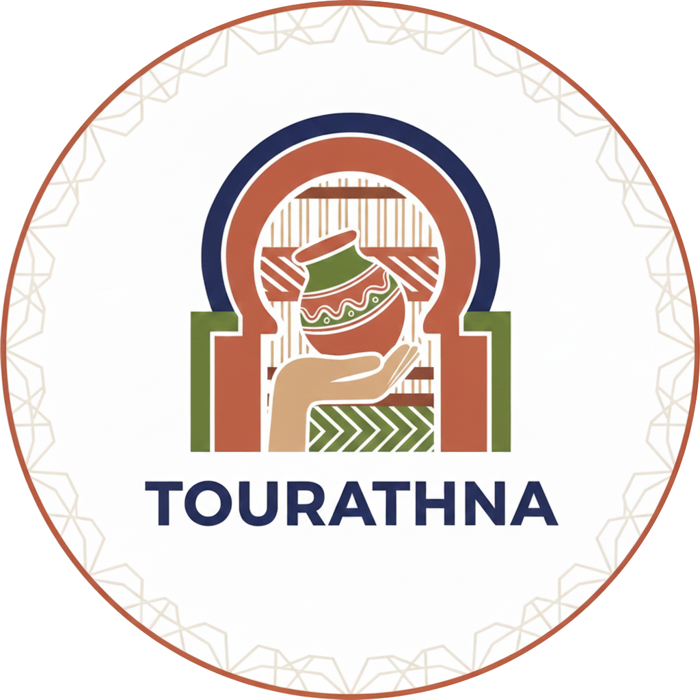

Le secteur artisanal en Tunisie représente une richesse culturelle et économique essentielle. Il constitue une partie importante de notre identité nationale, grâce à la diversité des métiers traditionnels tels que la poterie, la broderie, le cuivre, le bois, le tressage et bien d’autres. Ce patrimoine vivant témoigne d’un savoir-faire transmis de génération en génération.
Malgré son importance, le secteur artisanal souffre d’un manque de digitalisation. Plusieurs artisans ne disposent d’aucune visibilité en ligne, ce qui limite leur accès aux clients, aux marchés nationaux et internationaux, ainsi qu’aux opportunités de développement. De plus, beaucoup de jeunes ne s’intéressent plus à ces métiers en raison du manque de formation, de modernisation et de plateformes qui valorisent ces talents.
Certains métiers artisanaux sont même en voie de disparition. Les maîtres-artisans ont du mal à transmettre leurs compétences à la nouvelle génération, ce qui menace la préservation de notre patrimoine immatériel.
C’est pour répondre à ces défis que nous avons créé TOURATHNA. Cette plateforme permet :
TOURATHNA est plus qu’un simple site : c’est un pont entre le patrimoine de nos ancêtres et les générations futures, afin de protéger, valoriser et moderniser le secteur artisanal tunisien.
Découvrez des formations artisanales pour apprendre et préserver nos métiers traditionnels.
Vous êtes un artisan et vous souhaitez rejoindre notre plateforme ? Remplissez ce formulaire et nous vous contacterons.